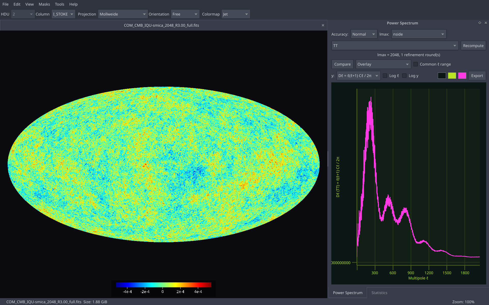
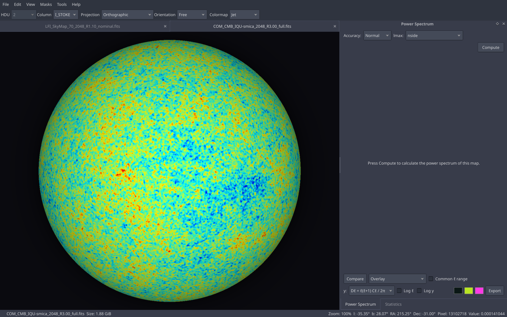
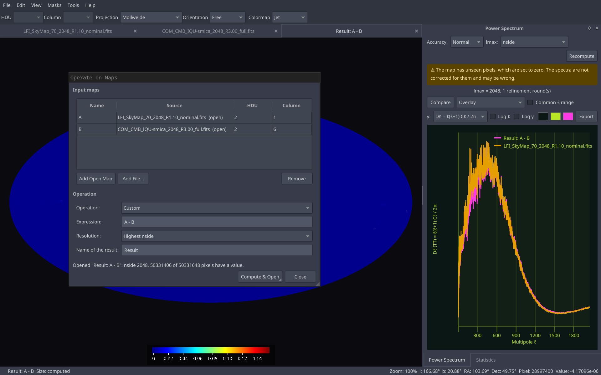
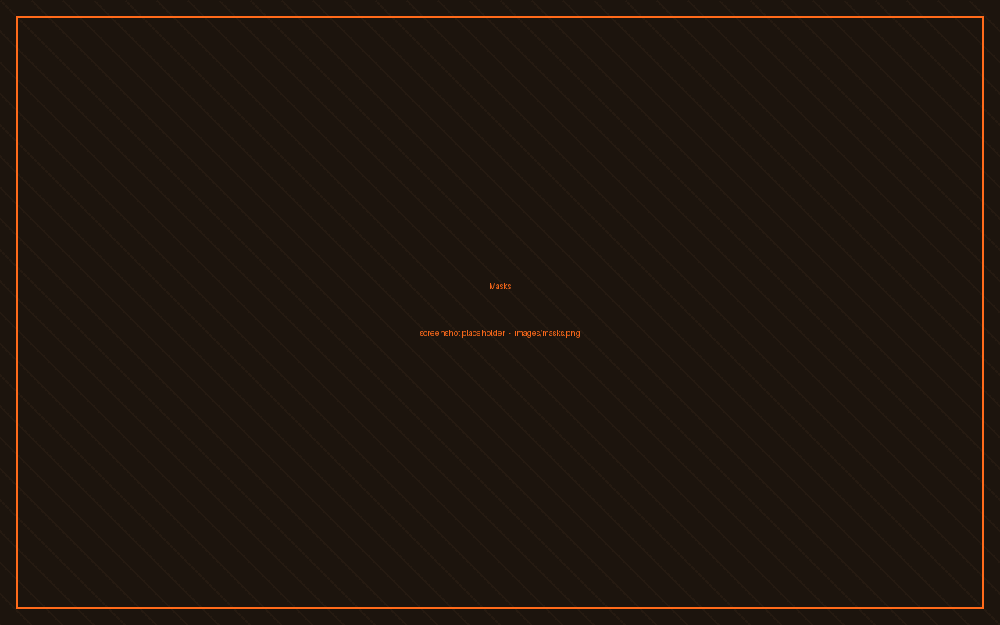
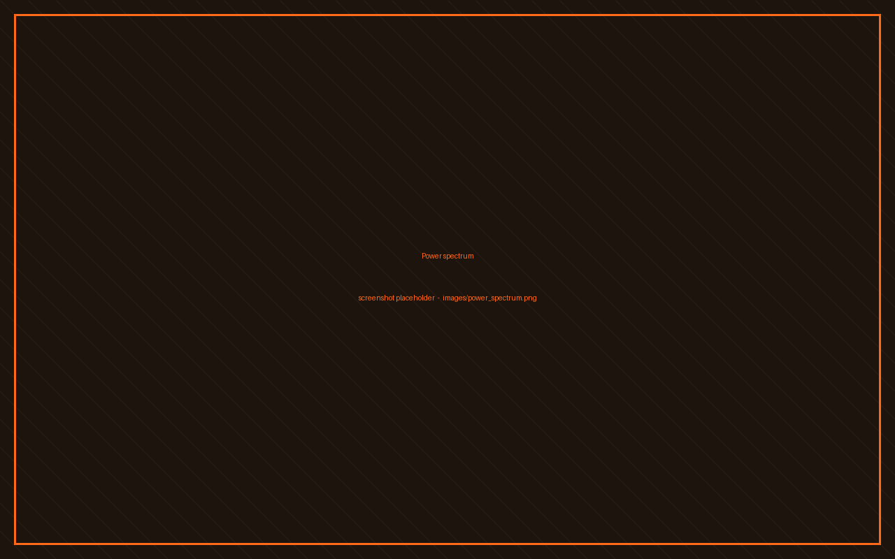
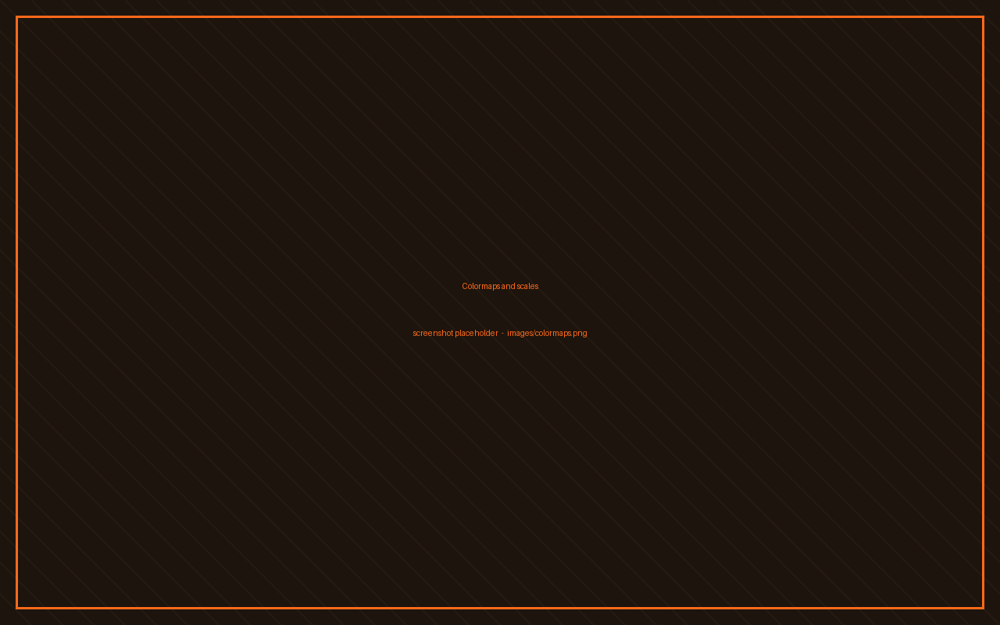
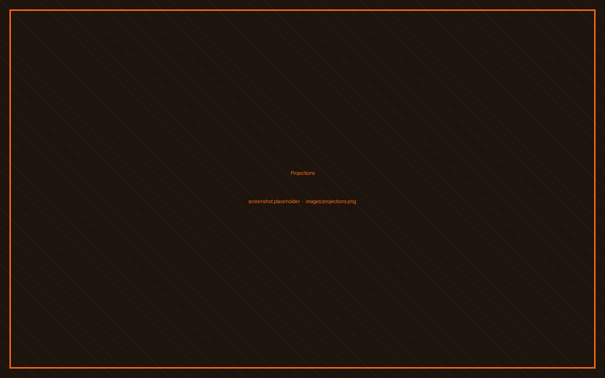
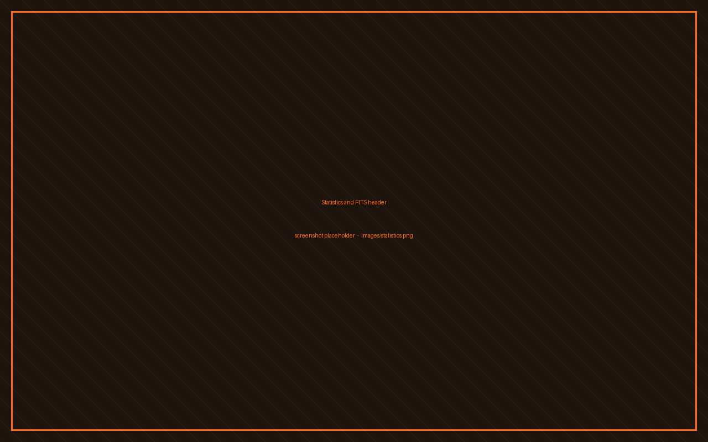
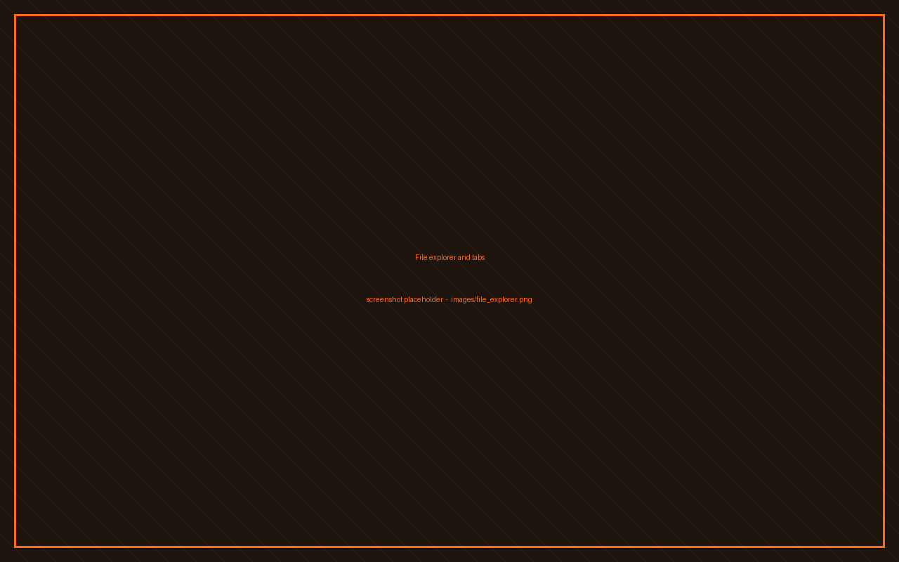

HpVis is a viewer for HEALPix maps. The projection and the pixel lookup happen per pixel on the GPU, so a nside 2048 map still turns under your mouse.









# open a map $ hpvis samples/wmap_W_iqu_nside32.fits # pick a look $ hpvis -p orthographic -m inferno -g map.fits # render to a file, no window $ hpvis --mask mask.fits --output out.png map.fits # what's inside? $ hpvis --info map.fits $ hpvis --hdu 2 --column 3 maps.npz
--projection--colormap--cscale--orientation--view--graticule--mask--output--info--statsNeeds Qt 6, CFITSIO and libzip; HEALPix, libsharp and NaMaster are vendored. Build steps for Arch, Debian and friends are in the installation guide, and the full manual is the usage guide.